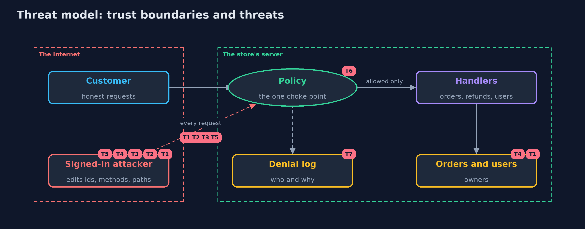

Threat Model — Broken Access Control
A threat model answers four questions: what are we protecting, who or what could harm it, how, and what do we do about it. This one covers this project's own demo system, not a production deployment. Domain: an online store.
Scope
The access control of an online store's API: reading and changing orders and addresses, refunds, user management and reports, by customers, support staff, admins and people who are signed out. It covers a signed-in customer who edits ids, methods and paths. It does not cover authentication itself, stolen tokens, or injection.
What we protect (assets)
- Every customer's orders and delivery addresses.
- Refunds, which move money.
- User accounts.
- The sales report, which lists every customer.
Who and what acts on the system
- Customers, who may act only on their own orders.
- Support staff, who may read any order but not change one.
- Admins, who may refund, manage users and read reports.
- A signed-in customer who edits requests by hand.
- Someone who is not signed in.
Trust boundaries
A trust boundary is a line that data or a request crosses between parts that trust each other differently. Threats cluster where those lines are.
- Internet to the store's API: every request crosses it, and every part of it can be edited by the sender.
- The page to the server: what the page shows or hides is not a control.

Each dashed box is a trust boundary. A rose tag such as T1 shows where the threat of that number, in the table below, applies.
Threats, using STRIDE
STRIDE is a checklist of six kinds of threat: Spoofing (S), Tampering (T), Repudiation (R), Information disclosure (I), Denial of service (D), Elevation of privilege (E).
| Id | Kind | Threat | Where it shows up | Control in this project | What is left |
|---|---|---|---|---|---|
| T1 | Information disclosure | A customer reads another customer's order by changing the id in the path (IDOR, CWE-639, API1) | GET /orders/{id} |
Object-level ownership check in the policy; someone else's order answers 404 | Every new object type needs its own ownership rule |
| T2 | Elevation of privilege | A route that nobody links to has no check, and is reached directly (CWE-862) | GET /admin/reports |
Deny by default: a route with no rule is refused | None while the route inventory test runs in the build |
| T3 | Elevation of privilege | A function hidden in the page is called directly, because the role was checked only in the page (API5) | POST /admin/refunds |
Role rules on the server, in the policy | None for this route; the page's menu is a convenience, not a control |
| T4 | Tampering | A customer changes or cancels another customer's order (horizontal escalation) | POST /orders/{id}/address, DELETE /orders/{id} |
Ownership rules; support may read but not change | Business rules such as cut-off times are separate checks |
| T5 | Elevation of privilege | A method that was not checked, such as DELETE next to a checked GET, deletes an account (verb tampering, CWE-285) | DELETE /admin/users/{name} |
Rules per method and path; unknown methods are not routed | A framework that maps methods loosely needs its own tests |
| T6 | Elevation of privilege | A new route is added without a rule and the policy is silently incomplete | GuardedStore route table |
Deny by default at run time, and a route inventory test that fails the build | A rule that is present but too wide is still possible; rules need review |
| T7 | Repudiation | Attacks go unnoticed, or the log itself leaks tokens | Policy denial log |
Every refusal is logged with who and why; tokens are never logged | Somebody has to read and alert on the log |
Assumptions
- Tokens identify their users correctly; authentication is a separate concern.
- In the demo, tokens and data are fixed demo values, and attacks target only this project's own code.
Out of scope
- Authentication and stolen tokens: the beginner identity module and the intermediate identity module.
- Injection: the next projects in web-security.
- Framework configuration: the Spring Security version of this project.
How the tests check this
NaiveStoreTestpins down each weakness of the first version, including that seven of the nine attacks succeed.GuardedStoreTestchecks that every attack is refused, every honest request works, the statuses are right, and refusals are logged without tokens.RouteInventoryTestchecks that every route has a rule, reports a forgotten one, and that routes match whole segments only.HttpFrontTestchecks the same answers over real HTTP and that tokens must match exactly.DemoRunsTestcompares the whole demo with the golden output.
Where this model goes next
The next project, sql-injection, attacks the same store through its search box instead of its routes.